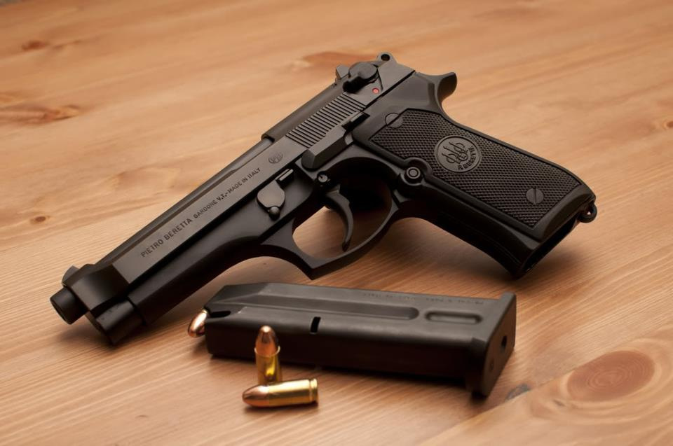
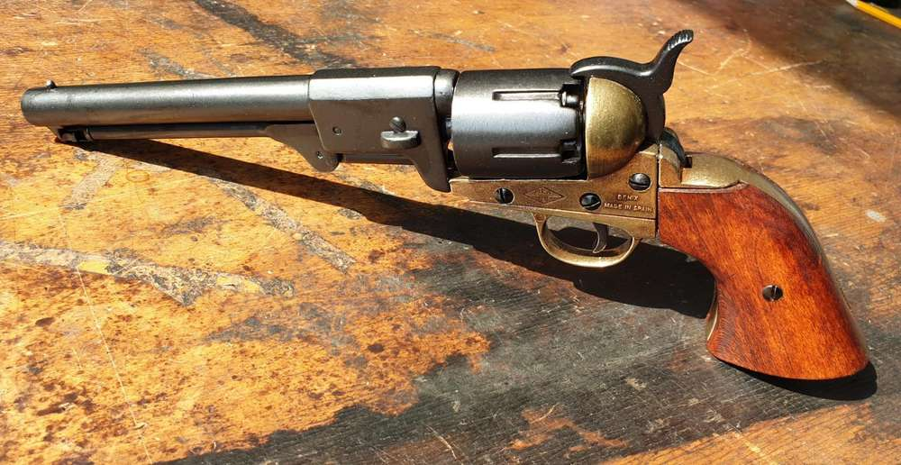
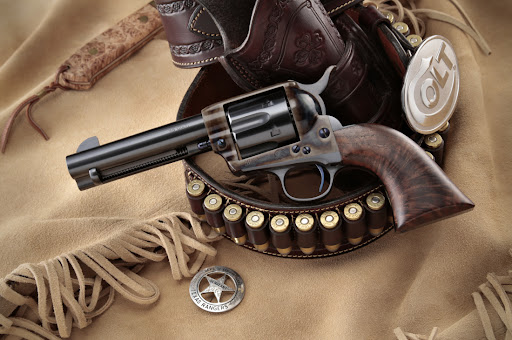
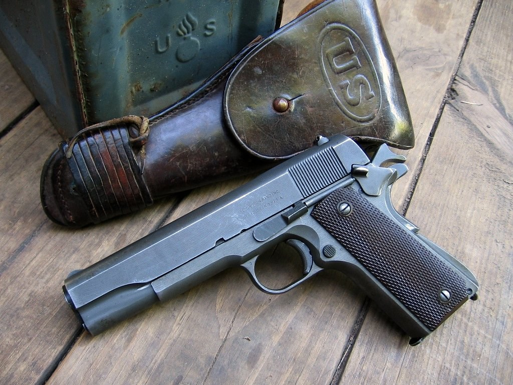
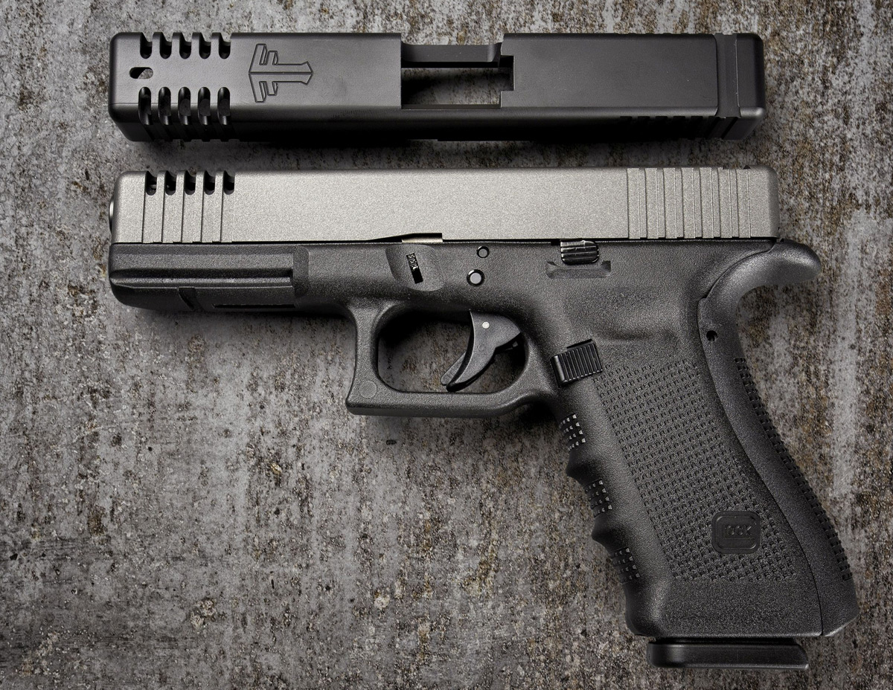
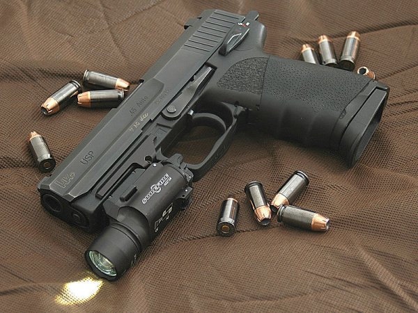
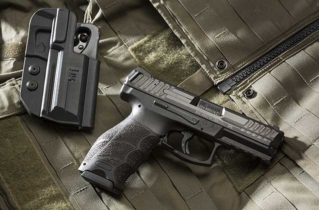
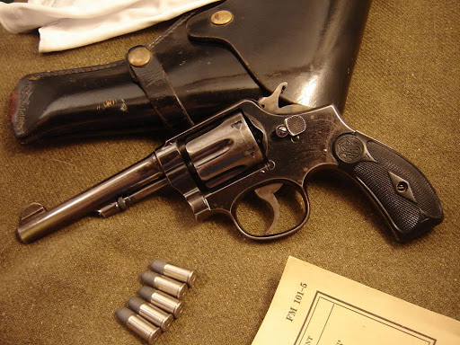
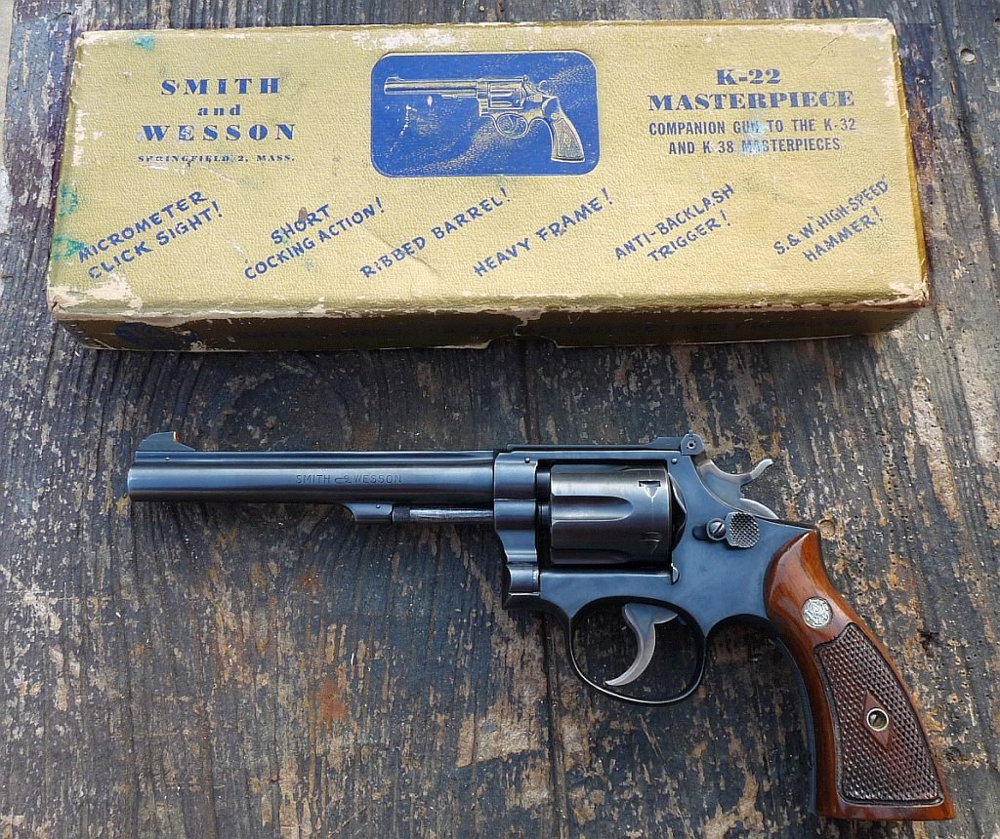
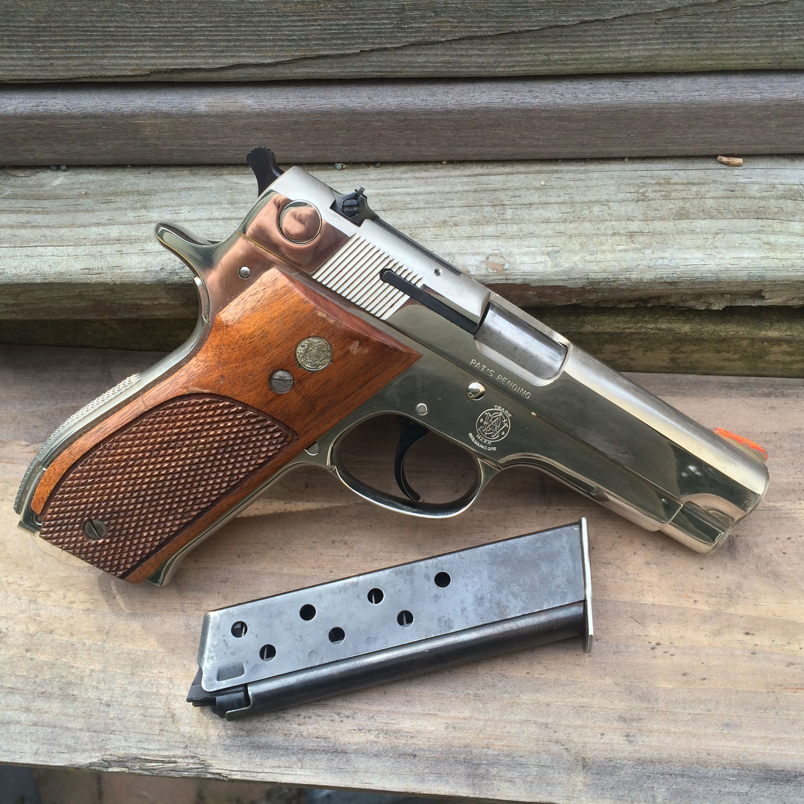

Beretta
-
Beretta 92

The Beretta 92 (also Beretta 96 in .40 S&W and Beretta 98 in .30 Luger) is a series of semi-automatic pistols designed and manufactured by Beretta of Italy. It was designed in 1972 and production of many variants in different calibers continues to the present day. It is most famous for replacing the M1911 .45 ACP pistol as the standard sidearms of the United States armed forces in 1985 as the M9 pistol.
Colt
-
Colt 1851 Navy Revolver

In production from 1850 until 1873, the Colt Navy Revolver changed warfare and the world. Much lighter than the Colt Dragoon of 1847 and originally designated the “Ranger,” the Colt Navy was adored by cavalry soldiers, partisan ruffians, and gunslingers like Jesse James and Wild Bill Hickock. The revolver remained popular long after the introduction of the modern self-contained cartridge. The Colt Navy is a legendary sidearm and could be considered the first true fighting handgun.
-
Colt Single Action Army

Likely the most iconic handgun in existence, the Colt Single Action Army gained fame in the holsters of Roosevelt’s Rough Riders and won the West in the hands of men like Wyatt Earp and Bat Masterson. General George Patton also carried an 1873 Colt Single Action Army, which should be all the endorsement a pistol needs to achieve fabled status. Known as the Peacemaker, the gun would’ve cost you about $17 in the 1870s. Today, you’ll pay 100 times that for a current production 1873 and as much as 500 times the original price for a first-generation specimen in good condition.
-
Colt 1911

Created by John Browning - arguably the greatest firearm designer of all time - this pistol served the American military from 1911 until 1990 and is still in the holsters of some soldiers today. The Colt 1911 helped win two World Wars and may be the most copied handgun ever. Lt. Col. Jeff Cooper referred to it as the “Yankee Fist,” and today, the 1911 is more popular than ever before. It dominates the custom handgun market and is offered in multiple configurations by many manufacturers.
Glock
-
Glock 17

The Glock 17 was the first of an extensive line of polymer handguns to be offered by the Austrian manufacturer. Now in its fifth generation, the Glock 17 has become one of the most recognized pistols in the world, and today a Glock, in some form or another, likely fills the holsters of more policemen than any other handgun. Essentially the design is nothing more than a modification of the 1935 Browning Hi-Power, and the 17, like all Glocks, has a fine reputation for reliability and durability. Because of their performance for the price, Glocks are one of the widest distributed handguns in the world.
-
Glock 43

The Glock 43 is arguably the most popular pistol in the world. The Glock 43 is a single stack, compact 9 mm handgun that has a six-round capacity. It is similar in size to the Glock 42; however, as fires larger round. Even though it was released relatively recently, it has become popular among people who concealed carry. It is a flat, semi-automatic pistol that provides the reliability of a Glock in a small package.
Heckler &
Koch
-
The Heckler & Koch USP

The Heckler & Koch USP .45 ("Universale Selbstladepistole" or "Universal Self-Loading Pistol") is the .45 ACP version of the USP. The USP .45 is based on the Mark 23 handgun in service with some USSOCOM personnel. Design work on a new family of pistols commenced in September 1989 focused primarily on the U.S. commercial and law enforcement markets. In 1991, USP prototypes participated in rigorous testing alongside H&K's entry in the OHWS (Offensive Handgun Weapon System) program requested by the U.S. Special Operations Command (USSOCOM) and which would later result in the Mk 23 Mod 0. The USP prototypes were then refined in 1992, based on input from the OHWS trials and the design was finalized in December of the same year. The USP was formally introduced in January 1993with the USP40 model (the base version) chambered for the increasingly popular .40 S&W cartridge, followed soon by the USP9 (using the 9x19mm Parabellum cartridge), and in May 1995—the USP45 (caliber .45 ACP).
-
The Heckler & Koch VP9

The Heckler & Koch VP9 (known as SFP9 in Europe and Canada) is a polymer-framed semi-automatic striker-fired handgun. The VP designation in the name refers to Volkspistole, which translates to "people's pistol", while SFP stands for "striker-fired pistol". The 9 stands for the caliber designation of 9 mm. The VP9 is the third striker-fired pistol that HK has produced. A variant of the VP9, the VP40, is chambered for .40 S&W
Smith &
Wesson
-
Smith & Wesson Model 10

Also known as the Military & Police or Victory Model, this fixed-sight, double-action revolver has been offered with barrel lengths ranging from 2 to 6 inches, and it is estimated that more than six million Model 10s have been manufactured. The revolver saw service in both World Wars and was chambered in .38 Long Colt, .38 S&W, and .38 Special. Thousands of policemen have walked their beats with a Model 10 at their sides. In 1974, S&W introduced a heavy-barrel version chambered for the .357 Magnum known as the Model 13.
-
Smith & Wesson K22

You would never think that a high-quality, double-action revolver (with a six-inch barrel and Circassian walnut grips) chambered for the .22 Long Rifle, could have been a success-especially considering that it was introduced during the depression. But between 1931 and 1939, Smith & Wesson sold more than 17,000 K22s. With a crisp, single-action trigger pull and a guarantee to shoot within 1.5 inches at 50 yards, this gun became an instant classic and was the forerunner to a long line of .22 rimfire revolvers from Smith & Wesson.
-
Smith & Wesson Model 39

This pistol has the distinction of being the first U.S. designed/manufactured double-action, semi-automatic pistol marketed in the United States. The Model 39 was chambered for 9mm Luger and was designed by S&W at the request of the Army to be an American equivalent to the Walther P38. The de-cocker and 8-round, single-stack magazine were like those on the P38, but it had a locking mechanism similar to the Browning Hi-Power. The Model 39′s true contribution was that after adoption by the Illinois State Police in 1967, it set the stage for a switch to semi-automatic handguns by American law enforcement. It also served as the forerunner to the higher-capacity Model 59—and many aluminum- and steel-framed S&W pistols—that so many police agencies would fall in love with.